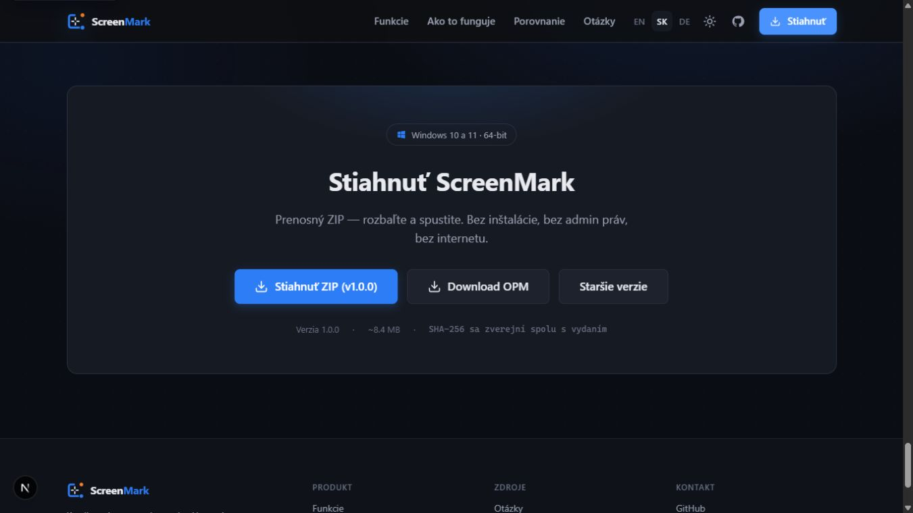
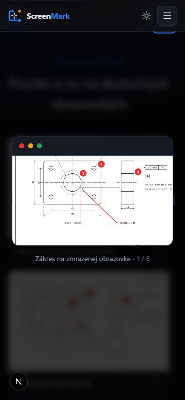
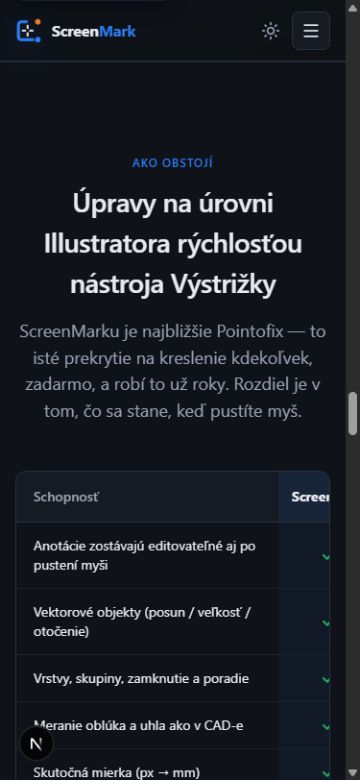
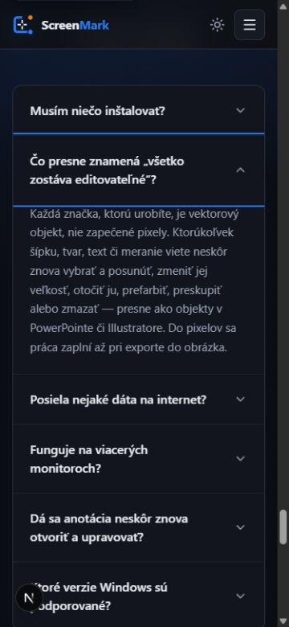
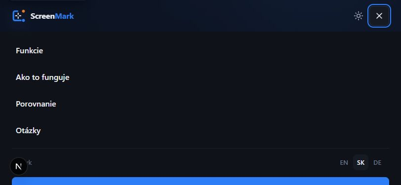

ScreenMark — označené nálezy
Červená označuje blokujúci alebo vysoko závažný problém, oranžová strednú závažnosť.
Download flow · desktop 1366 × 768

1 2 3href="#" a nič nestiahne.
2 OPM smeruje na verziu 0.9.9.84 a „Staršie verzie“ iba na koreň github.com, zatiaľ čo karta tvrdí 1.0.0.
3 Biely text na modrej má 3,91:1; drobné metadáta používajú podlimitný subtle token.
Lightbox · mobil 375 × 812

1 2object-cover, takže sa oreže približne 10 % výšky.
Porovnanie · mobil 375 × 812

1Focus v FAQ · mobil 375 × 812

1overflow-hidden oreže ľavú a pravú stranu focus outline; zostanú iba dve modré horizontálne čiary.
Mobilné menu · landscape 812 × 375

1body overflow:hidden.